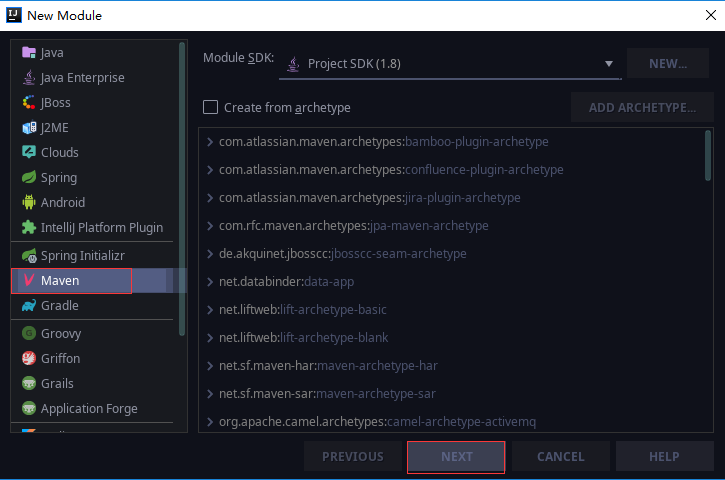
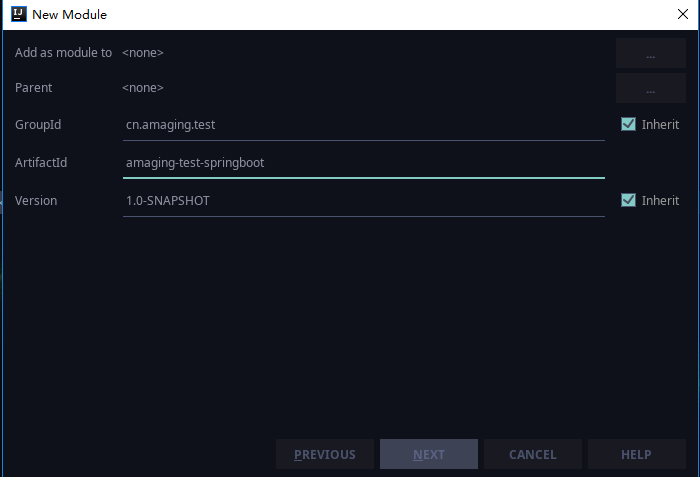
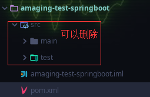
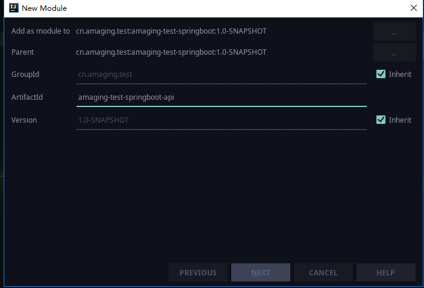

本文介绍如何从零构建一个springboot多模块项目。集成开发环境使用IntelliJ IDEA 。
在IDEA中，完全可以直接通过懒人式勾选操作完成一个springboot项目的构建，由于各项目之间往往存在依赖，这种通过勾选配置完成的springboot项目，存在两个缺陷：
通过IDEA直接配置的项目或模块，默认会使用springboot最新版本，不利于项目框架版本的统一控制，虽然可以手动修改版本号，但初始化时会自动下载最新版本的maven依赖，耗时耗资源；
父级模块默认是org.springframework.boot，对于依赖其他父级项目的构建，又造成了不便。
1 2 3 4 5 6 7 <parent > <groupId > org.springframework.boot</groupId > <artifactId > spring-boot-starter-parent</artifactId > <version > 2.0.4.RELEASE</version > <relativePath /> </parent >
因此，这里我们不使用勾选式配置，而是通过传统maven项目创建方式，来完成多模块的构建。
比如我们使用springboot框架，实现一个简单的RestFul风格的接口，我们依次能想到的模块大致有：api(接口定义模块)、common（通用处理模块）、dao(持久层模块)、controller（控制层模块）、service（业务实现模块）等。
父模块创建 选择最基础的maven工程，直接next即可。

这里我们提一下maven的GroupId和ArtifactId：
groupId ：the unique identifier of the organization or group that created the project（项目组织唯一的标识符，实际对应JAVA的包的结构，是main目录里java的目录结构）；
artifactId ：unique base name of the primary artifact being generated by this project（项目的唯一的标识符，实际对应项目的名称，即项目根目录的名称）。
基于这两个概念的理解，我们的GroupId和ArtifactId应该也需要遵循一个规范：一个项目（甚至一整个maven自建仓库）中，维持最基本的maven树形结构，任何叶子节点，理论上都能追溯到包的根路径。
注意：虽然maven支持多级模块构建，但实际应用中，多级模块并不利于整个项目的持续集成，因此我们往往只使用两级模块。如国内的两个顶级apache项目，自身都只使用了两级结构：dubbo 和 rocketmq 。
开始创建父模块：

父模块一般只是做一个整体管理，通常并不会直接在父模块里面编写代码，所以src目录直接删除掉即可，只保留一个pom.xml就足够了。

创建好的父模块，现在pom文件中只有：
1 2 3 4 <groupId > cn.amaging.test</groupId > <artifactId > amaging-test-springboot</artifactId > <version > 1.0-SNAPSHOT</version >
子模块创建 接下来开始创建子模块，左侧project列表，选择刚刚创建的父模块，右键->New->Module。和父模块创建一样，选择Maven后，Next即可。

可以看到，【Add as module to】【Parent】【GroupId】直接从父模块继承了对应属性，且GroupId是不可修改的。之前父模块的artifactId，我们填写的是amaging-test-springboot，因此，便于直观理解，子模块以这个开头就可以了，填写为amaging-test-springboot-xxx。
创建完成后，可以看到父模块的pom文件多出了
1 2 3 4 5 6 7 8 9 10 11 12 13 <groupId > cn.amaging.test</groupId > <artifactId > amaging-test-springboot</artifactId > <packaging > pom</packaging > <version > 1.0-SNAPSHOT</version > <modules > <module > amaging-test-springboot-api</module > <module > amaging-test-springboot-common</module > <module > amaging-test-springboot-dao</module > <module > amaging-test-springboot-service</module > <module > amaging-test-springboot-user</module > </modules >
Springboot依赖包添加 由于多个模块可能都会使用springboot组件，我们可以将springboot依赖直接添加到父模块的pom文件中，另外其他的一些辅助依赖包，也可直接添加，另外也可以放在common模块中，其他模块则直接依赖common模块。
1 2 3 4 5 6 7 8 9 10 11 12 13 14 15 16 17 18 19 20 21 22 23 24 25 26 27 28 29 30 31 32 33 34 <properties > <project.build.sourceEncoding > UTF-8</project.build.sourceEncoding > <project.reporting.outputEncoding > UTF-8</project.reporting.outputEncoding > <springboot_version > 2.0.4.RELEASE</springboot_version > </properties > <dependencyManagement > <dependencies > <dependency > <groupId > org.springframework.boot</groupId > <artifactId > spring-boot-dependencies</artifactId > <version > ${springboot_version}</version > <type > pom</type > <scope > import</scope > </dependency > </dependencies > </dependencyManagement > <dependencies > <dependency > <groupId > org.springframework.boot</groupId > <artifactId > spring-boot-starter-test</artifactId > <scope > test</scope > </dependency > <dependency > <groupId > org.springframework.boot</groupId > <artifactId > spring-boot-devtools</artifactId > <optional > true</optional > <scope > true</scope > </dependency > </dependencies >
至此，一个简单的springboot多模块框架就搭建完成了。示例代码见：https://github.com/duckyrain/amaging-test-springboot